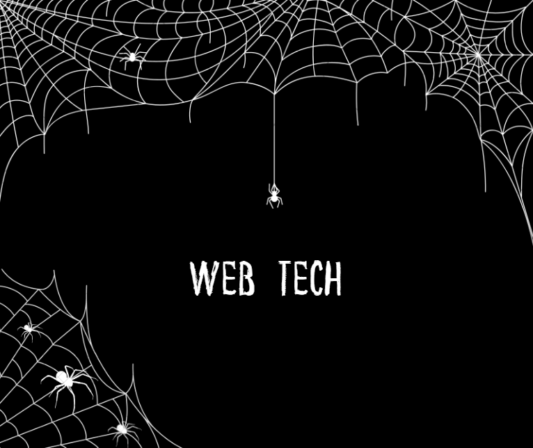

Web Tech.
Web Development Team

Web Development Team
Hello! We are Web Tech, and We are web developers. Our team consists of Omar, Mazen, Mahmoud, Farida.

Skills
HTML
CSS
Javascript
MySQL
Node Js
The Energy Consumption Monitoring and Reporting System is a Python program designed to track and control energy consumption in residential, commercial, or industrial settings.
The primary goal of the system is to help users monitor their energy usage and provide them with detailed reports in PDF format, enabling better energy management and cost savings.
The program will collect real-time energy consumption data from various sources, analyze the data, and generate comprehensive reports for users to review.
1. Real-time Data Collection: The program will integrate with smart meters, IoT devices, or
energy monitoring systems to collect real-time energy consumption data, such as
electricity, water, or gas usage.
2. Data Analysis and Visualization: It will process the collected data to generate visualizations
like charts, graphs, and statistics, making it easier for users to understand their energy
consumption patterns.
3. User-Friendly Interface: The system will offer an intuitive command-line or graphical user
interface (GUI) to interact with the program and view energy usage details.
4. Energy Consumption Alerts: Users can set threshold values for energy consumption, and
the program will send alerts when these thresholds are exceeded.
5. Energy Consumption Control: The program can implement energy control strategies, such
as turning off certain appliances remotely or scheduling specific activities to optimize
energy usage.
6. Reporting and PDF Generation: The system will generate periodic (daily, weekly, or monthly)
reports in PDF format, providing a comprehensive overview of energy consumption and
savings trends